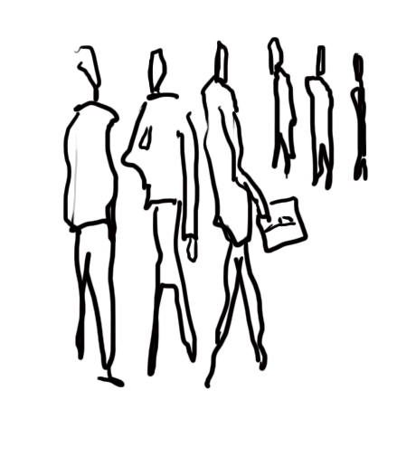

Magret Jaune
Accueil université > Polytech Nantes > Actualités
Polytech Nantes : l'école d'ingénieurs de l'université de Nantes
Dernières actualités


Coordonnées
Plans d'accès
Mis à jour le 25 janvier 2011 par Service Com Polytech'
Accueil université > Polytech Nantes > Actualités
Mis à jour le 25 janvier 2011 par Service Com Polytech'